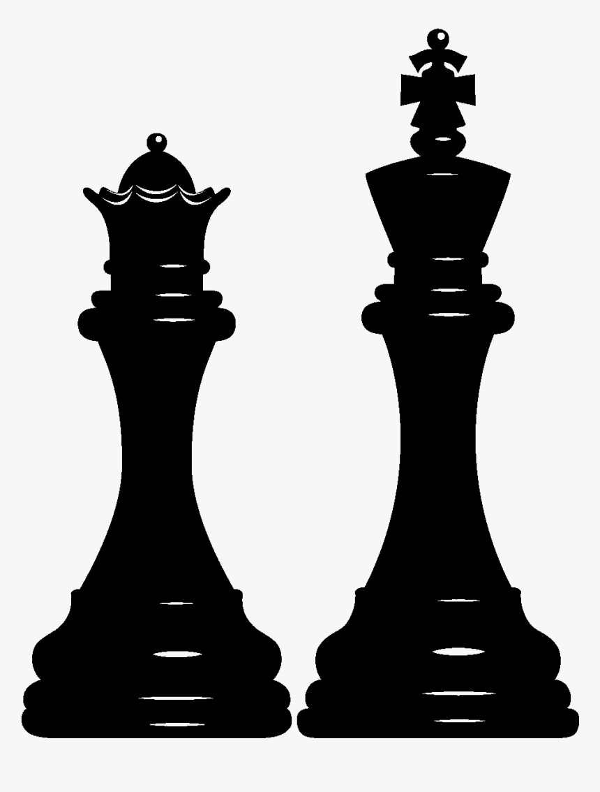

Vellore Institute of Technology, Chennai
MTech Integrated in Software Engineering
(5 years program)
CGPA: 9.32/10.0

About me
I am a Machine Learing and Computer Vision Engineer based in Bangalore. I am currently working in Smart Store+ division at Capillary Technologies Pvt Ltd.Below are some of my skills, and I'am always looking to learn more.
 I have signifcant research and industrial experience in developing Computer Vision applications
using tools like OpenCV, scikit-geometery and scikit-image in C++ and Python.
The applications developed tested my knowledge on tradional computer vision, image processing
and computational geometery.
I have signifcant research and industrial experience in developing Computer Vision applications
using tools like OpenCV, scikit-geometery and scikit-image in C++ and Python.
The applications developed tested my knowledge on tradional computer vision, image processing
and computational geometery.
 My typical day at work include developing machine learning applications using
TensorFlow, Keras and scikit-learn. Furthermore, I have performed data
manipulation, data analysis and visulization using tools like pandas, matplotlib and seaborn.
I also have experience using PySpark for distributed data processing.
My typical day at work include developing machine learning applications using
TensorFlow, Keras and scikit-learn. Furthermore, I have performed data
manipulation, data analysis and visulization using tools like pandas, matplotlib and seaborn.
I also have experience using PySpark for distributed data processing.
 Over the past 5.5 years, I've had extensive experience with Python in the course of research, classwork, personal projects
and at work. The Machine Learning applications developed by me in Python have used Object Oriented Programming (OOPs) has it's
programming paradigm and typing as it's support for type hints.
Over the past 5.5 years, I've had extensive experience with Python in the course of research, classwork, personal projects
and at work. The Machine Learning applications developed by me in Python have used Object Oriented Programming (OOPs) has it's
programming paradigm and typing as it's support for type hints.
 My experience in C++ comes from developing computer vision applications for edge devices using OpenCV and practising
competative programming on platforms such as LeetCode, Hackerrank, Hackearth and InterviewBit. I have also compiled and
generated libraries using cmake.
My experience in C++ comes from developing computer vision applications for edge devices using OpenCV and practising
competative programming on platforms such as LeetCode, Hackerrank, Hackearth and InterviewBit. I have also compiled and
generated libraries using cmake.
 I have used AirFlow as an Orchestration tool for MLOps to automate and managing workflows such as
data validation before training an AI model, training the machine learning model at specific intervals, batch processing,
and inference.
I have used AirFlow as an Orchestration tool for MLOps to automate and managing workflows such as
data validation before training an AI model, training the machine learning model at specific intervals, batch processing,
and inference.
 I have a significant experience using TensorFlow for developing and training deep neural networks (DNNs) for
computer vision applications. While working for Capillary, I have built custom layers and pruned DNNs for reducing the
model complexity. Furthermore, I have quantized deep neural networks using post training quantization and
quantization aware training for deploying models on edge devices.
I have a significant experience using TensorFlow for developing and training deep neural networks (DNNs) for
computer vision applications. While working for Capillary, I have built custom layers and pruned DNNs for reducing the
model complexity. Furthermore, I have quantized deep neural networks using post training quantization and
quantization aware training for deploying models on edge devices.
 I have some experience of using MongoDB as backend database from developing machine learning applications,
all the applications use Python's MongoDB driver. Furthermore, I also have experience in utilizing the aggregate
framework provided by MongoDB for document transformation and data analysis.
I have some experience of using MongoDB as backend database from developing machine learning applications,
all the applications use Python's MongoDB driver. Furthermore, I also have experience in utilizing the aggregate
framework provided by MongoDB for document transformation and data analysis.
 My experience in SQL comes from reading Capillary's massive database using PySpark to perform data validation,
and feature engineering for creating the train, test and validation set for Machine Learning models.
My experience in SQL comes from reading Capillary's massive database using PySpark to perform data validation,
and feature engineering for creating the train, test and validation set for Machine Learning models.
April 2021 - Present
TensorFlow, AirFlow, OpenCV, Python, PySpark
June 2019 - March 2021
TensorFlow, OpenCV, Python, Scikit-learn, Scipy
January 2019 - May 2019
OpenCV, TensorFlow, Python, C++
Journal: Neural Processing Letters | Springer | Status: Paper Accepted
Transient Evoked Otoacoustic Emissions (TEOAE) are a class of otoacoustic emissions that are generated by the cochlea in response to an external stimulus. The TEOAE signals exhibit characteristics unique to an individual, and are therefore considered as a potential biometric modality. Unlike conventional modalities, TEOAE is immune to replay and falsification attacks due to its implicit liveliness detection feature. In this paper, we propose an efficient deep neural network architecture, EarNet, to learn the appropriate filters for non-stationary (TEOAE) signals, which can reveal individual uniqueness and long-term reproducibility. EarNet is inspired by Google’s FaceNet. Furthermore, the embeddings generated by EarNet, in the Euclidean space, are such that they reduce intrasubject variability while capturing inter-subject variability, as visualized using t-SNE. The embeddings from EarNet are used for identification and verification tasks. The K-Nearest Neighbour classifier gives identification accuracies of 99.21% and 99.42% for the left and right ear, respectively, which are highest among the machine learning algorithms explored in this work. The verification using Pearson correlation on the embeddings performs with an EER of 0.581% and 0.057% for the left and right ear, respectively, scoring better than all other techniques. Fusion strategy yields an improved identification accuracy of 99.92%. The embeddings generalize well on subjects that are not part of the training, and hence EarNet is scalable on any new larger dataset.
Conference: International Conference on Advanced Computing and Communications (ADCOM 2018)
The paper proposes a device capable of making the lives of visually impaired easier. The device encompasses an image recognition using deep learning (convolutional neural network) unit coupled with the novel idea of the bone conduction system, which can be mounted on the sunglasses of the visually impaired. The whole process allows two-channel hearing enabling people to hear regular as well as the intended audio. Instead of air, the sound is propagated through the bone in the form of vibration and is sent to cochlea through a membrane. The proposed system takes an image from a mounted camera, classifies it with a dedicated processor and sends the audio signal through a Bluetooth channel to the bone conduction transducer so that the user can hear through the system what is in front of him. The system is able to recognize the input image using deep learning and give an audio output directly to the eardrum of the user.
MTech Integrated in Software Engineering
(5 years program)
CGPA: 9.32/10.0
My education in Software Engineering focused from strong software engineering princeples such as SDLC, Software Requirement Specificatin (SRS), Requirement Specification Document etc. to good programming practices in Python, C++, JAVA, .NET and Computer Networks. Furthermore, we had vigrous courses on Data Structures & Algorithms, Linear Algebra, Probability & Statistics and Calculus.
My extra curricular activities during my college days included participating in various Hackathons and IOT Makeathons. I also lead Technocrats Robotics Team in the year 2018 to Robocon 2018 competition. Few, my work in the team are presented in this vido clips shown below.
A few of my notable accomplishments are given below,

Integer eu ante ornare amet commetus vestibulum blandit integer in curae ac faucibus integer adipiscing ornare amet.

Integer eu ante ornare amet commetus vestibulum blandit integer in curae ac faucibus integer adipiscing ornare amet.

Integer eu ante ornare amet commetus vestibulum blandit integer in curae ac faucibus integer adipiscing ornare amet.
Fringilla nisl. Donec accumsan interdum nisi, quis tincidunt felis sagittis eget. tempus euismod. Vestibulum ante ipsum primis in faucibus vestibulum. Blandit adipiscing eu felis iaculis volutpat ac adipiscing accumsan eu faucibus. Integer ac pellentesque praesent tincidunt felis sagittis eget. tempus euismod. Vestibulum ante ipsum primis in faucibus vestibulum. Blandit adipiscing eu felis iaculis volutpat ac adipiscing accumsan eu faucibus. Integer ac pellentesque praesent. Donec accumsan interdum nisi, quis tincidunt felis sagittis eget. tempus euismod. Vestibulum ante ipsum primis in faucibus vestibulum. Blandit adipiscing eu felis iaculis volutpat ac adipiscing accumsan eu faucibus. Integer ac pellentesque praesent tincidunt felis sagittis eget. tempus euismod. Vestibulum ante ipsum primis in faucibus vestibulum. Blandit adipiscing eu felis iaculis volutpat ac adipiscing accumsan eu faucibus. Integer ac pellentesque praesent.
 Fringilla nisl. Donec accumsan interdum nisi, quis tincidunt felis sagittis eget. tempus euismod. Vestibulum ante ipsum primis in faucibus vestibulum. Blandit adipiscing eu felis iaculis volutpat ac adipiscing accumsan eu faucibus. Integer ac pellentesque praesent tincidunt felis sagittis eget. tempus euismod. Vestibulum ante ipsum primis in faucibus vestibulum. Blandit adipiscing eu felis iaculis volutpat ac adipiscing accumsan eu faucibus. Integer ac pellentesque praesent. Donec accumsan interdum nisi, quis tincidunt felis sagittis eget. tempus euismod. Vestibulum ante ipsum primis in faucibus vestibulum. Blandit adipiscing eu felis iaculis volutpat ac adipiscing accumsan eu faucibus. Integer ac pellentesque praesent tincidunt felis sagittis eget. tempus euismod. Vestibulum ante ipsum primis in faucibus vestibulum. Blandit adipiscing eu felis iaculis volutpat ac adipiscing accumsan eu faucibus. Integer ac pellentesque praesent.